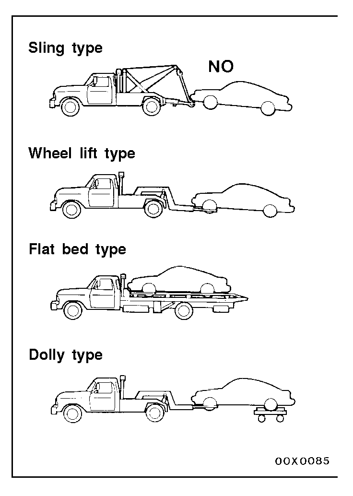
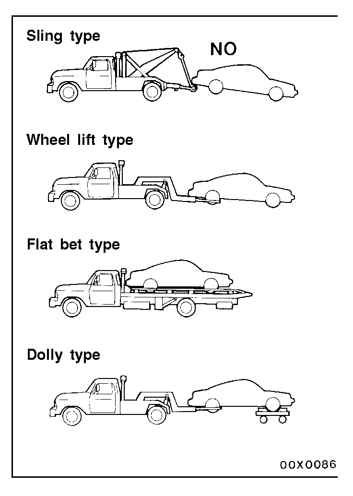
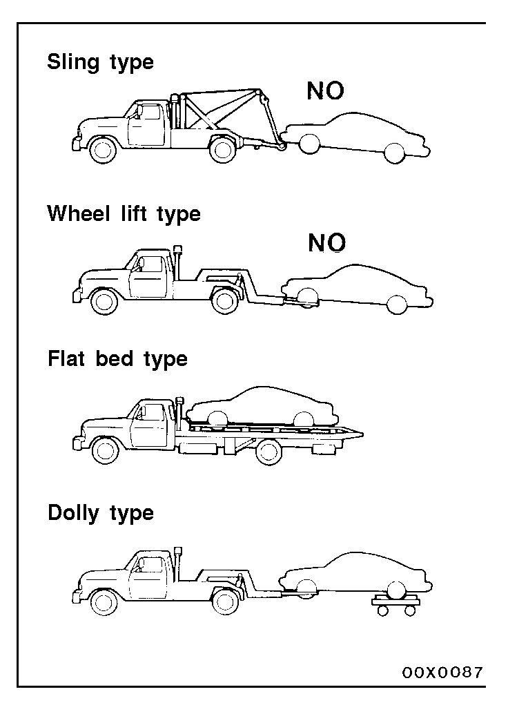
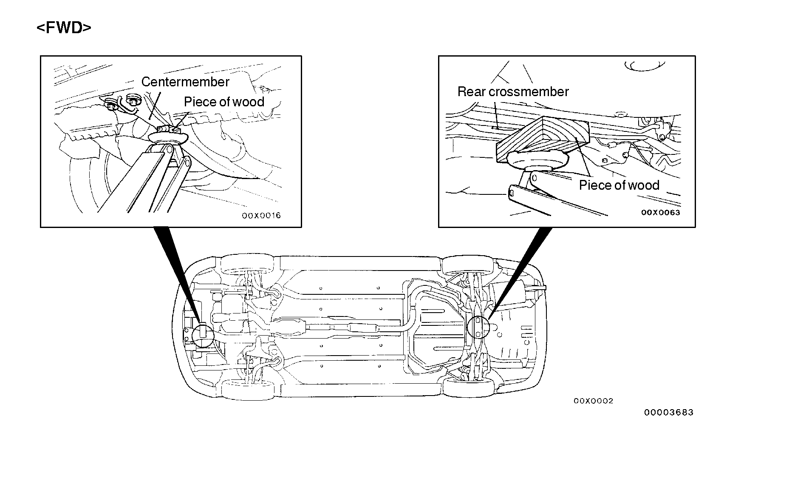
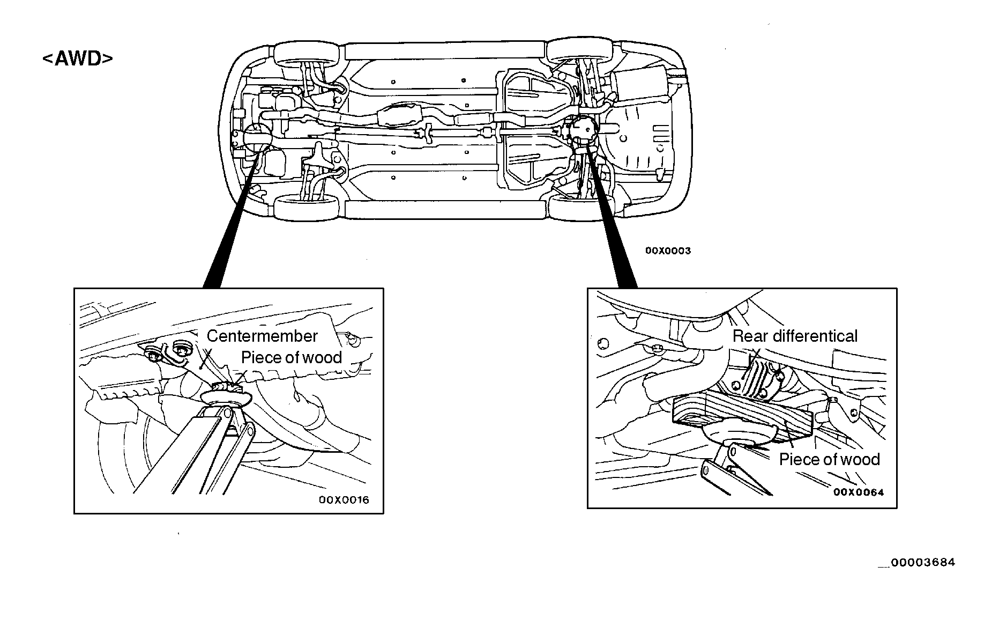
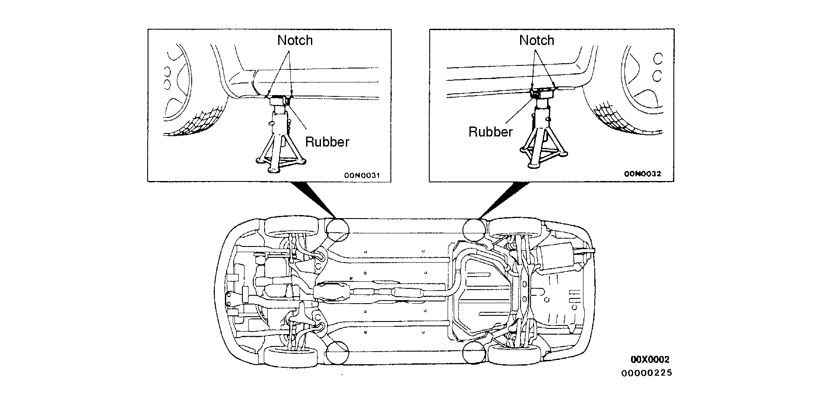
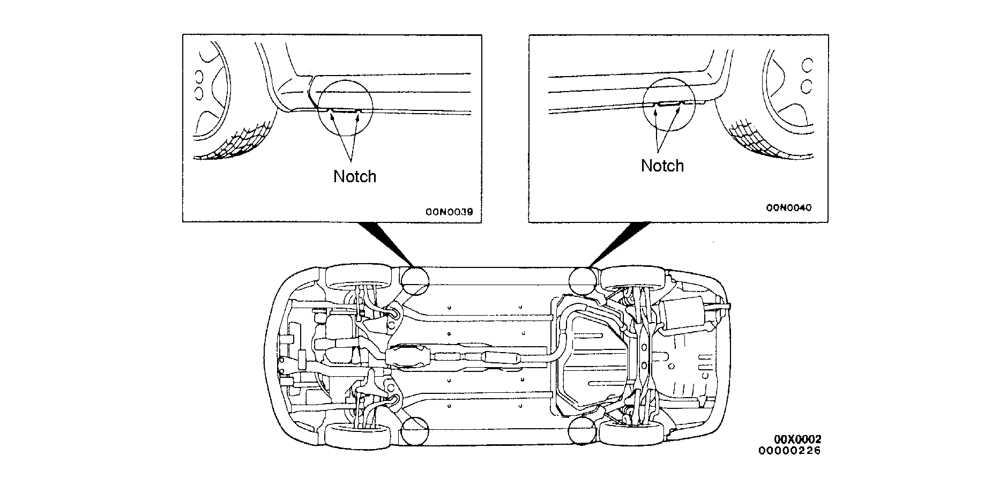

![[Previous]](https://mitsubishitechinfo.com/data/F24S/BUTTONS/fprevg.png)
![[Next]](https://mitsubishitechinfo.com/data/F24S/BUTTONS/fnextg.png)
     
TOWING AND HOISTING
<FWD>
WRECKER TOWING RECOMMENDATION
FRONT TOWING PICKUP
Caution
This vehicle cannot be towed by a wrecker using sling-type equipment to prevent the bumper from deformation. If this vehicle is towed, use wheel lift type, flat bed type or dolly type equipment.
The vehicle may be towed on its rear wheels for extended distances provided the parking brake is released. It is recommended that vehicles be towed using the front pickup whenever possible.
REAR TOWING PICKUP
Caution
1.This vehicle cannot be towed by a wrecker using sling-type equipment to prevent the bumper from deformation.
If this vehicle is towed, use wheel lift type, flat bed type or dolly type equipment.
2.Do not use steering column lock to secure front wheel position for towing.
3.Make sure the transaxle is in Neutral if vehicle will be with drive wheels on the ground.
Automatic transaxle vehicle may be towed on the front wheels at speeds not to exceed 50 km/h (30 mph) for distances not to exceed 30 km (18 miles).
Caution
If these limits cannot be met, the front wheels must be placed on a tow dolly or a flat bet type must be used.
TOWING WHEN KEYS ARE NOT AVAILABLE
When a locked vehicle must be towed and keys are not available, the vehicle may be lifted and towed from the front, provided the parking brake is released. If not released, the rear wheels should be placed on a tow dolly.

SAFETY PRECAUTIONS
The following precautions should be taken when towing the vehicle.
1.DO NOT LIFT OR TOW THE VEHICLE BY ATTACHING TO OR WRAPPING AROUND THE BUMPER.
2.Any loose or protruding parts of damaged vehicle such as hoods, doors, fenders, trim, etc., should be secured or removed prior to moving the vehicle.
3.Operator should refrain from going under a vehicle while it is lifted by the towing equipment, unless the vehicle is adequately supported by safety stands.
4.Never allow passengers to ride in a towed vehicle.
5.State and local rules and regulations must be followed when towing a vehicle.
<AWD>
Caution
1.If only the front wheels or only the rear wheels are lifted for towing, the bumper will be damaged.
In addition, lifting of the rear wheels causes the oil to flow forward, and may result in heat damage to the rear bushing of the transfer, and so should never be done.
2.Do not tow the vehicle with only its front wheels or only the rear wheels on a rolling dolly, or the viscous coupling will be damaged. In a worst case, the vehicle may jump forward suddenly.
3.If this vehicle is towed, use flat bed type or dolly type equipment.
LIFTING, JACKING SUPPORT LOCATION
FLOOR JACK
Caution
Never support any point other than the specified one, or it will be deformed.
RIGID RACK
